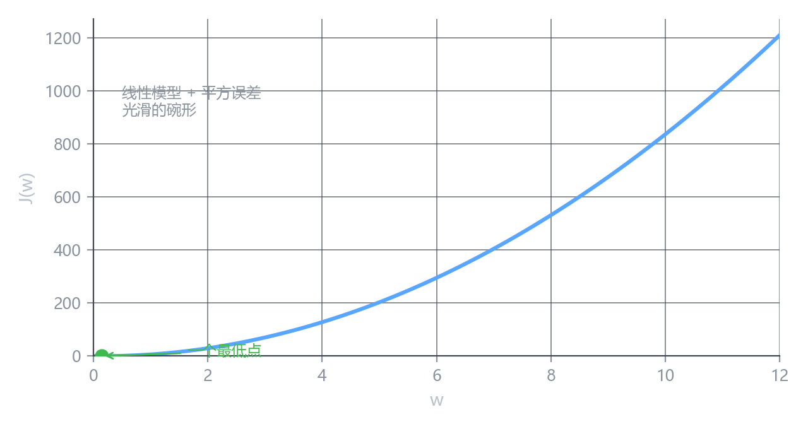
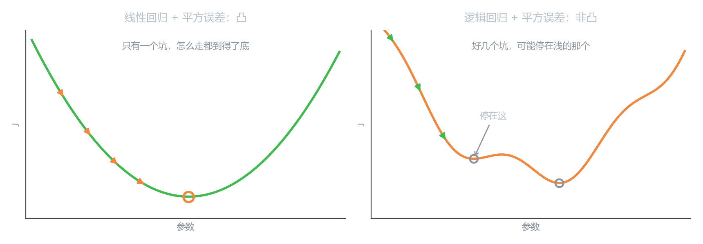
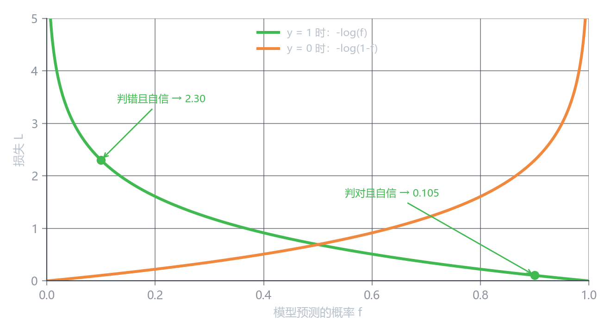

逻辑回归的代价函数
回到这批肿瘤数据
| 样本 | 1 | 2 | 3 | 4 | 5 | 6 | 7 | 8 | 9 | 10 | 11 | 12 | 13 |
|---|---|---|---|---|---|---|---|---|---|---|---|---|---|
| 大小 (cm) | 1.0 | 1.5 | 2.0 | 2.2 | 2.8 | 3.0 | 3.5 | 4.0 | 4.5 | 5.0 | 5.5 | 6.5 | 7.0 |
| 标签 y | 0 | 0 | 0 | 0 | 0 | 0 | 0 | 1 | 1 | 1 | 1 | 1 | 1 |
y=1 是良性，y=0 是恶性。模型是上一课的：
f(x) = g(wx + b) = \frac{1}{1 + e^{-(wx+b)}}
现在缺的是：怎么衡量它错了多少。
先照搬上一章的做法
第 2 章用的是平方误差。它在别处确实好用——顺着它的导数走就能滑到最低点，这也是第 2 章能顺利收敛的原因。既然如此，先试试直接搬过来：
J(w,b) = \frac{1}{2m}\sum_{i=1}^{m}\left(f(x_i) - y_i\right)^2
先把 b 按住不放（令 b = 0），只看 J 随 w 怎么变：

漂亮的碗形，只有一个最低点，梯度下降怎么走都会滑到底。这就是第 2 章能顺利收敛的原因。
加上激活函数之后
现在把 g 套上去，模型变成 f(x) = g(wx)，还是那个平方误差。
形状就变了：

左边是第 2 章熟悉的碗形——不管从哪儿出发，顺着坡往下走总能到底。
右边是同一个平方误差，只是模型里多套了一层 g。曲线开始起伏，出现了好几个浅坑。梯度下降只认”眼前哪边是下坡”，掉进浅坑就停下了。
真实数据上我跑了一遍：同一份损失、同一套梯度下降，从 144 个不同的起点出发——
- 有的落到 J = 0.0118 的深谷；
- 有的卡在 J = 0.2308 的平坦区，几乎没动。
结局差了二十倍，只因为出发点不同。
我们需要一个地形更好的代价函数。
换一个损失函数
后面的公式会一直用到这两个词，先把它们分开：
| 词 | 管什么 |
|---|---|
| Loss（损失） | 一个样本错得有多离谱 |
| Cost（代价） | 全部样本的 loss 平均下来 |
比如”这一张片子判错了，罚 4.6”是 loss；“训练集上 13 张片子平均罚 0.03”是 cost。
这一章先用 L 定义单样本的 loss，最后再把它们平均成 cost J。
思路变了：不去和”预测值减真值的平方”较劲，而是直接衡量”模型对这个标签的预测有多不合理”。
先只考虑一个样本，定义：
L\bigl(f(x),\ y\bigr)
它读作”当真实标签是 y、模型预测是 f(x) 时，这个预测有多糟”。
分两种情况：
L = \begin{cases} -\log\bigl(f(x)\bigr) & y = 1 \\[4pt] -\log\bigl(1 - f(x)\bigr) & y = 0 \end{cases}
为什么偏偏是 -\log
这个选择不是拍脑袋。看它长什么样：

先看绿色那条（y=1 时，L = -\log f）：
| 模型预测 f | 这个预测有多糟 | L |
|---|---|---|
| 0.99 | 几乎确定是良性，判对了 | 0.010 |
| 0.90 | 判对了 | 0.105 |
| 0.50 | 完全在蒙 | 0.693 |
| 0.10 | 判错了 | 2.303 |
| 0.01 | 错得很自信 | 4.605 |
三个特点，正好是我们想要的：
一、判对了损失接近 0。 f \to 1 时 -\log f \to 0。
二、判错了损失迅速变大。 f 从 0.1 降到 0.01，损失从 2.3 涨到 4.6。
三、越自信地错，罚得越狠，而且没有上限。 f \to 0 时 -\log f \to +\infty。
f = 0.01 但真实是 1：
- 交叉熵：-\log(0.01) = 4.61
- 平方误差：(0.01-1)^2 = 0.98
平方误差封顶就是 1，再错也不会更多。交叉熵不封顶——模型越嘴硬，代价越大。
这就是”逼模型不敢乱自信”的机制。
橙色那条（y=0 时）是绿色的镜像：f \to 0 时损失趋近 0，f \to 1 时趋向无穷。含义一样，只是方向反过来。
拿真实数据验一验
这个 L 真的能描述”错多少”吗？用上一课拟合好的 w = 5.987、b = -22.375 算三个样本：
| 样本 | y | 预测 f | L | 这个值合理吗 |
|---|---|---|---|---|
| 4.0 cm | 1 | 0.828 | 0.189 | 判对了但不算自信，损失小 ✓ |
| 2.0 cm | 0 | 0.00003 | ≈ 0.00003 | 判对了且非常自信，几乎不罚 ✓ |
| 1.0 cm（假设是良性） | 1 | 7.5\times10^{-8} | 16.39 | 错得离谱，重罚 ✓ |
第三行是假设的：1 cm 的肿瘤模型会判成恶性，但如果它其实是良性，损失就是 16.39。
这里 z = 5.987 \times 1.0 - 22.375 = -16.388，损失 16.3880。
不是巧合：
-\log g(z) = \log(1 + e^{-z}) \approx -z = |z| \quad (z \text{ 很负时})
“自信地判错”的损失，正好等于你把样本推到边界以外的距离。 推得越远罚得越狠，这个设计很合理。
把它推广到全部样本
单个样本的 L 定义好了，整个训练集的损失就是把它们平均：
J(w,b) = \frac{1}{m}\sum_{i=1}^{m} L\bigl(f(x_i),\ y_i\bigr)
把分段形式代进去：
J(w,b) = -\frac{1}{m}\sum_{i=1}^{m}\left[\,y_i \log f(x_i) + (1-y_i)\log\bigl(1 - f(x_i)\bigr)\,\right]
这就是交叉熵（cross-entropy）损失。
回到前面那个”不同起点、不同结局”的实验，把损失换成交叉熵重跑一遍——所有起点都会落到同一个地方。
新的代价函数没有平台、没有局部极小、没有断点。这正是它能顺利跑梯度下降的原因。
但要注意一点：它不是平方误差那种对称的碗。
碗的底部是平的，越接近最优点梯度越小，最后几乎走不动。交叉熵的曲线不对称——靠近最优点时还留着一定斜率，梯度不会在快到底时消失。
这个差别在训练后期非常关键。
分段形式写着别扭——每次求值都要先判断 y 是 0 还是 1。
合并的技巧是：y_i \log f + (1-y_i)\log(1-f) 在 y=1 时第二项被乘 0 消掉，只剩 \log f；y=0 时第一项被消掉，只剩 \log(1-f)。
一个式子覆盖两种情况，写代码时可以不用 if 分支。
附一：这个损失是怎么想出来的（可跳读）
上面是”先给答案再解释”。如果你想看它是怎么被推出来的，往下读。
把模型当成概率
P(y=1 \mid x) = f(x), \qquad P(y=0 \mid x) = 1 - f(x)
一个式子写两种结果
P(y \mid x) = f^{\,y}\bigl(1-f\bigr)^{1-y}
| y | f^{\,y} | (1-f)^{1-y} | 乘积 |
|---|---|---|---|
| 1 | f | 1 | f ✓ |
| 0 | 1 | 1-f | 1-f ✓ |
让数据最可能出现
如果 m 个样本互相独立，“同时看到这些标签”的概率是连乘：
L_{\text{似然}}(w,b) = \prod_{i=1}^{m} f_i^{\,y_i}\bigl(1-f_i\bigr)^{1-y_i}
最大似然估计就是：找参数让这个乘积最大。
连乘没法算（m 一大就下溢成 0），取对数变成连加：
\ell(w,b) = \sum_{i=1}^{m}\left[\,y_i\log f_i + (1-y_i)\log(1-f_i)\,\right]
\log 单调递增，所以最大化 \ell 和最大化似然是同一个参数——只是换了个坐标看同一座山。
梯度下降要求最小化，于是取负、除以 m：
J(w,b) = -\frac{1}{m}\sum_{i=1}^{m}\left[\,y_i\log f_i + (1-y_i)\log(1-f_i)\,\right]
和上面那个式子一模一样。
所以：最大似然 → 对数似然 → 交叉熵。 这个损失不是凭空定义的，它是”让数据最可能出现”这个要求的直接结果。
附二：梯度怎么求（可跳读）
有了 J，下一步要能算它对 w 的导数。结果干净得出奇。
先对单个样本求。记 z = wx + b，f = g(z)。
损失对 f 求导（分段形式直接求）：
\frac{\partial L}{\partial f} = -\frac{y}{f} + \frac{1-y}{1-f}
f 对 z 求导，用上一课那个漂亮的性质 g'(z) = g(z)\bigl(1-g(z)\bigr)：
\frac{\partial f}{\partial z} = f(1-f)
两者相乘（链式法则）：
\frac{\partial L}{\partial z} = \left(-\frac{y}{f} + \frac{1-y}{1-f}\right) \cdot f(1-f)
展开：
= -y(1-f) + (1-y)f = -y + yf + f - yf = \boxed{f - y}
\frac{\partial L}{\partial z} = f - y
就是”预测值减真实值”。
那个 awkward 的 -\frac{y}{f} + \frac{1-y}{1-f}、那个 f(1-f)，全部约掉了，只剩这个东西。
这不是巧合——是因为损失函数选得和 g 的导数相配。如果当初选了平方误差配 g，求出来的导数会拖着一堆 g(1-g) 的尾巴，越靠近两端越小，梯度消失。
再往回传到参数上（\dfrac{\partial z}{\partial w} = x，\dfrac{\partial z}{\partial b} = 1）：
\frac{\partial J}{\partial w} = \frac{1}{m}\sum_{i=1}^{m}\bigl(f_i - y_i\bigr)x_i, \qquad \frac{\partial J}{\partial b} = \frac{1}{m}\sum_{i=1}^{m}\bigl(f_i - y_i\bigr)
看起来和线性回归的梯度一模一样——因为残差那一项长得一样。区别只在于这里的 f_i 是 Sigmoid 的输出，不是一条直线。
| 线性回归 | 逻辑回归 | |
|---|---|---|
| 预测 | f = wx+b | f = g(wx+b) |
| 损失 | \frac{1}{2m}\sum(f-y)^2 | -\frac{1}{m}\sum[y\log f + (1-y)\log(1-f)] |
| \partial L/\partial z | f - y | f - y |
| 最终梯度 | \frac{1}{m}\sum(f-y)x | \frac{1}{m}\sum(f-y)x |
同一个梯度公式。 下一课就靠它做梯度下降。
核心概念
| 概念 | 内容 |
|---|---|
| Loss vs Cost | Loss 管单个样本，Cost 管全部样本的平均 |
| 为什么不用平方误差 | 配 g 之后地形变差：不同起点会卡在平坦区，损失差二十倍 |
| 单样本损失 L(f,y) | y=1 时 -\log f；y=0 时 -\log(1-f) |
| 为什么是 -\log | 判对趋于 0、判错迅速变大、自信地错无上限 |
| 交叉熵 | J = -\frac{1}{m}\sum[y\log f + (1-y)\log(1-f)] |
| 合并式的用处 | 一个式子覆盖两种情况，代码不用写分支 |
| 从哪来 | 伯努利似然 → 连乘 → 取对数 → 取负平均 |
| 梯度 | \partial J/\partial w = \frac{1}{m}\sum(f_i-y_i)x_i，和线性回归同形 |
| 地形 | 不是碗，但没有平台、没有局部极小、没有断点 |
下一课
梯度有了，下一课把逻辑回归的梯度下降完整跑一遍——顺便看它收敛得有多快。